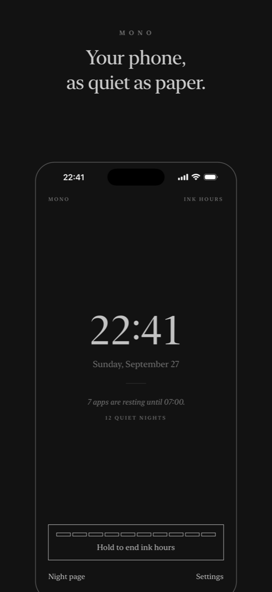

Your phone, as quiet as paper.
For a few hours each night, the apps that pull at you go quiet and the screen turns grey and dim. Your iPhone becomes about as exciting as a book.

Ink hours
Choose the apps, categories and sites that keep you up. Mono uses Apple’s Screen Time to rest them each night, so opening one shows a calm page and a single button: Close.
The ink screen
A two-minute Shortcuts setup turns on Grayscale and Reduce White Point at night and turns them off again in the morning.
No shortcuts out
To end ink hours early, you hold for three seconds and watch ten small blocks fill in, one by one. That’s usually enough time to change your mind.
Quiet nights
Every night you don’t cut short is counted. Home and Lock Screen widgets show the count and whether your phone is resting.
Private by design
Mono has no accounts, no analytics and no servers. Screen Time never tells Mono which apps you use. Privacy policy.